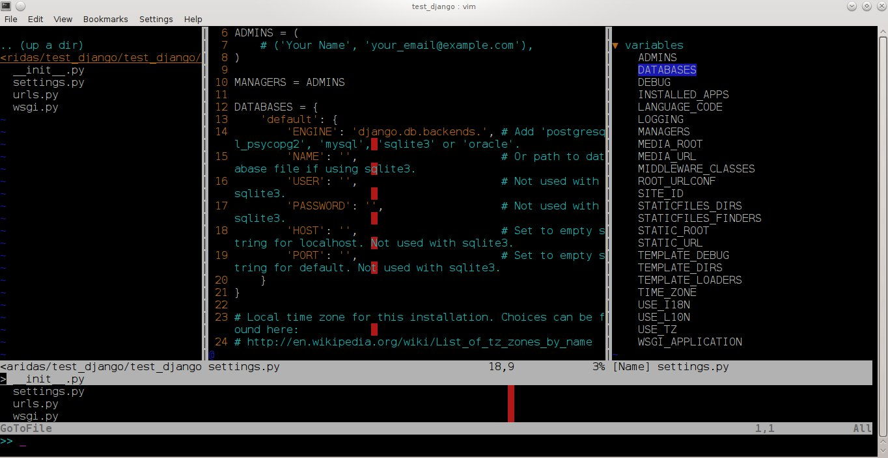
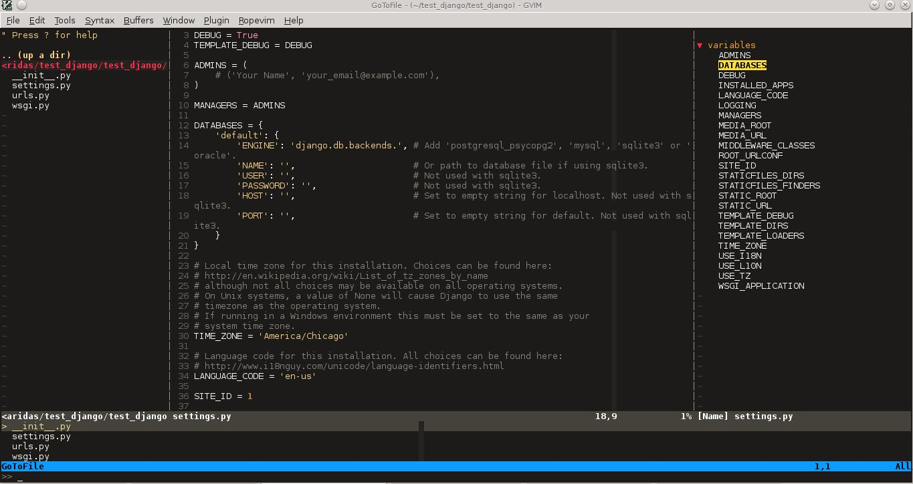
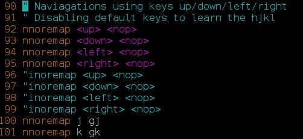
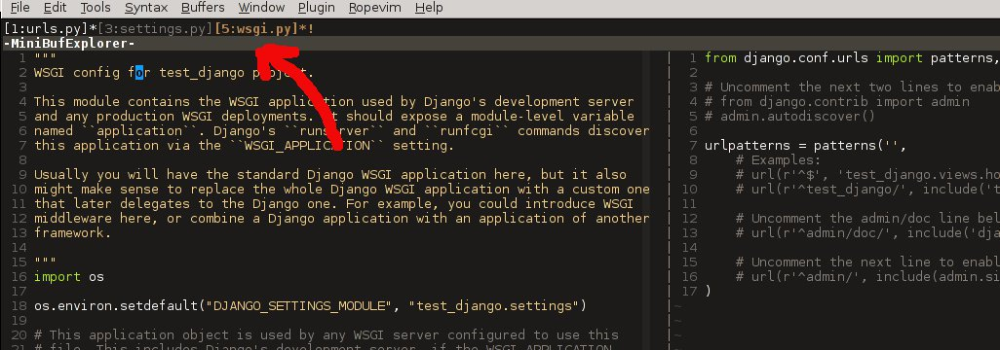
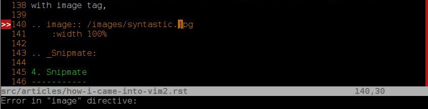
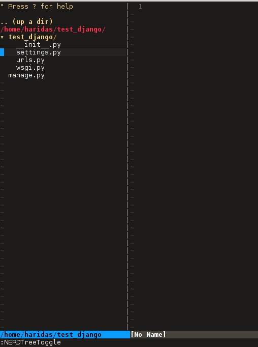
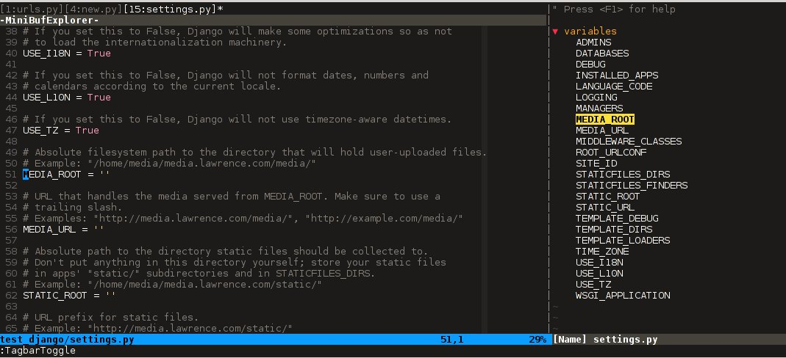

To follow this article the reader should at least have a basic idea of how to use Vim and its command modes. Or if you are new to Vim, you can read my first blog to know how I came in to Vim and its fundamental differences with other editors.
Here I'm trying to explain how to make the Vim more productive by adding some extra features through Vim plugins. After this setup the Vim would have most of the features that a modern IDE offers. I'm a python developer so this Vim setup is a little inclined to python side. But I'm including general plugins only to make it suitable for most of the programming languages.
The installation and configuration setups are being described at the end, if you want to take a look at it, go here Setup Vim from Scratch.
The basic Vim or Vi installation comes with most of the Gnu/Linux machines are more than enough for good productive works. And Vim has plugin structure, so we can extend the Vim through plugins. The plugins further improve the productivity and reduces lot of key strokes.
The Gnu/Linux's Console or Terminal based Vim has some limitation to show good fonts and colors. So you have to install GTK version of the Vim(Gvim). Gvim gives you all the good looking features to your Vim. Just take a look at my Konsole and GTK Vim screen shots.
Vim on KDE Konsole
Gvim
Here is the list of plugins that I have been configured on my Vim. It includes good color theme also. All of this Vim setup are there on my Github project. Towards the end I described how to make use of my Github project to get all of this features on your Vim. Before that first understand the functionalities and use case of different plugins and then we can go to the installation step.
Topics
- Plugins
A Side Note
In my .vimrc file, I disabled the use of arrow keys in the Vim command mode. That was forced me to learn the Vim classic hjkl arrow keys, it really worked for me. Now I don't required the key board arrow keys any more even in Vim editing mode.
If you want to change this behaviour, just remove below sections from my .vimrc file.
Similarly, you can just go through my .vimrc file to see other options, I tried to document my .vimrc file as much as possible. You can play around with it to make it suitable for you.
1. MinibuferExplorer (File Tabs)
This is like Tabs on other IDE's. We can see the opened files on vim using this plugin. By default, we have to use :ls to see opened buffers. So this plugin makes it very convenient to view the opened files as a tabs.
Vim has slightly different concept about the Tabs compared to other IDE's. Vim has support for tabs by default. That tab is different from the normal IDE's Tab. Actually the difference is that the vim tabs are a collection of opened buffers(or files.). So we can consider it as a group of tabs in other IDE context.
But most of the time we only requires one vim tab and set of opened buffers(files.). The MinibuferExplorar will help you to see those opened buffers as a virtual tabs. See the below screen shot.
You can use CTRL + h/j/k/l or CTRL + w to navigate around the different split windows and the mini buffer Explorer. Try out that right away. To open a hidden buffer in vertical split, just go in to the MinibuferExplorer and choose corresponding file buffer(You can use normal hj keys to move through different tabs ) and press v, to open it on a vertical split window. Press s to open buffer or file on a horizontal split window.
Back to Topics
2. Command-t (File Search)
Very awesome plugin for vim. Which help us to search the files very quickly. Actually to get better speed it was implemented in C. To install this plugin you need one extra compilation of this plugin because of C code. Don't worry I explained this in the setup section.

Once we enabled this plugin you can see the search list using your <leader> + t. I'm using my leader key as ,, so for me it looks like ,t (comma + t). Normally the leader key is "\". You can change this in .vimrc file.
Actually the leader key provides a extension to use all the keys in the keyboard as your own shortcuts. This leader key is activated in the normal mode of the vim.
Command-t also list the all opened buffers by ,b, and it also list the vim jump list.
Back to Topics
3. Syntastic (Syntax Checker)
Another very useful plugin for all types of programming languages. This plugin will help you to keep the syntax of the program correct, like auto correct in other IDE's. This package is general one, and we can expand very easily. By default it support lot of programming languages. So this plugin is a must one for Vim.
For example, if your are editing an RST file (All my blog posts are in reStructured Text format), if we made some syntax errors and when we trying to save, the syntastic plugin show you the location of the error and its reason very neatly.
Take a look at the portion of rst file of this blog post. I made a syntax error with image tag,
Similarly synstastic help you to follow a standard coding methods defined by the programming communities. for eg; Python code has PEP8 standard, so while writing python code, if you are not following it, synstastic will show you the problem. After a while you will learn the PEP8 without an extra work :).
Back to Topics
4. Snipmate (Code Templates)
A simple way to avoid typing some repetitive sequence of words. For example, in python, we initialize a class by typing class keyword, name, etc... Instead of doing all those drama, we can just populate the default set of class structure from snipmate, by typing cl <tab>. Try out by opening a python test file.
The snimpate plugin provide lot of such shortcuts for different programming languages. We can also define our own snippets. For web developers this is very useful to create <table>, <div> tag completions.
vim test.py
#!/bin/python
cl
After tying cl press tab and see the magic of full class template. similarly you can define your own snipmate. for eg; for <tab> to expand the for statement completely for you language.
You can see all the snipmate files inside this plugin folder, like python.snipmate, ruby.snipmate etc.. The syntax of defining new snipmate for your language is pretty interesting.
Back to Topics
5. Fugitive (Git)
This is for git repo management inside vim itself. It provide set of short commands, that we can directly typed in the vim command mode to see and do the git related operations. We don't need to go outside the editing environment to manage those stuffs.
Also it have very nice git diff view inside vim itself, good looking and nice to use.
To see all available git commands under this plugin just type :G<tab>.Provided you are been inside a git repository.
Back to Topics
6. NerdTree (File Browser)
This will display your project directory structure in tree format.It provides lot of shortcuts to navigate through the source tree easily.This is another common thing required for an IDE. Check the below image to see how it looks like.
Shortcuts - I mapped the following keys in .vimrc file to show and hide the nerdtree when ever required. My .vimrc file has this settings. You can map this to your own choice.
To open and close the nerdtree press CTRL + n.
Also you can see other available commands for this plugin by typing,
ESC + :NERD <tab>
Back to Topics
7. NerdCommenter (Commenting)
This plugin is only to comment the multi line code blocks together. In normal vim there is no such thing(Not sure), so if we want to comment multiple lines we have to go through each lines.
This plugin make it handy, so you only need to select the code block using mouse or keyboard ( Vim visual mode) and type the following command to comment it out.
Comment entire selected code block : <leader>cc,
Toggle the commented state : <leader>c<space>
Back to Topics
8. Rope
Rope is specially for python project navigation. Most of the IDE's have this support to see the definition of a function or class by clicking on it(or via shortcut key).
By default, if we open a python project in Vim it won't have support for this feature. When we trying to use this feature first time, the Rope prompt use to create a ropeproject under our directory. This is just a simple settings file under our project folder to specify different settings and path information.
The Plugin help us to create it easily, after that we can use this plugin to view definition of all function or classes comes under the rope project path.
In my Vim I mapped the <leader>j to :RopeGotoDefinition. For eg.
import os
import sys
Keep your cursor on top of the os and press the <leader>j or type :RopeGotoDefinition, Vim will open the os file from the system path into your the current Vim session as another buffer. Similarly we can go to definition of any python entity comes under the Rope path settings.
This plugin also required to meet the modern IDE feature list. :)
Back to Topics
9. Tagbar (Class Browser)
This plugin is similar to the NerdTree, but instead of listing project directory structure it list the objects and functions inside a file. Like Class browser in other IDE's.
I mapped <leader>l to open tagbar and same combination to close it also.
Back to Topics
10. Simple Pairs.
This is a simple plugin to auto complete single quote, double quote, parentheses. This is very handy to save some key press.
Back to Topics
Others
This section is not to discus about plugin, but exploring already available features build in with the Vim.You can consider me as beginner in that area :). If you are looking for learning more advanced details of the Vim editor, you don't need to search in google, you can find it out under its documentation itself.
To see the all documentation type ESC + :help. The documentation is very huge, so Vim provides search option across all its documentation. To see a documentation about a topic, type ESC + :help <topic>
For eg;
To see about the documentation about jumps , type : ESC + :help jumps
I wrote above example, because it is an another interesting feature required for modern IDE. The thing is that it was build in with Vim.
Jump List
I found this feature accidently. This is to jump across different files and same time option for jump back through all the files we came across.
To understand this feature - If we used Rope plugin to see definition of a function outside the current file, it will open new buffer in Vim and direct us to that file. What if we want to come back to the same location of previous file ?. This requires jump back operation. Press CTRL + o, you can see the magic. Press CTRL + <tab> to go forward again.
There is much more things are there about jumplist, Vim internally keeps the list of our locations across different files. you can see that by typing :jumps command and this list is available different instance of the Vim editor.
Similar to this, lot of things are out there to learn. This Others section is not going to end here :). But for now I'm stopping here.
So the explanation of Vim feature is over for now, lets look at how to setup the Vim to get all those above features, make Vim ready to extend with new plugins.
Back to Topics
Setup Vim from Scratch
These Vim pluins and all are there in my Vim github project. I put all those settings and plugins in standard way. So you can extend or remove them when ever required.
Before doing this, please backup your current Vim settings from your home directory.
My git has already every vim related files. Only thing required is just clone it and do some steps to go ahead with all the features that I discussed above.
$git clone git://github.com/haridas/Dotfiles.git
$cd Dotfiles
I kept all the required plugins as git submodules. So we will get the new changes from the plugin projects by updating the submodule project. While cloning my main repo won't retrieve the submodules or external plugin git projects. But we have all the settings and paths in my git projects, so we can easily fetch the current stable code from all the external projects. To do that, type below command inside Dotfiles folder.
$pwd
<path to gitproject>/Dotfiles
$git submodule init
$git submodule update
Now you have all the files required to get start with vim, one more step left is link my git files as your vim settings files. To do that just soft link the files to git repo files. Here is the steps.
$cd
$ln -s <path-to>Dotfiles/vim-files/vim .vim
$ln -s <path-to>Dotfiles/vim-files/vim/vimrc .vimrc
Thats it, now open your vim, you can see all the features described above are available, except command-t. Because it required a compilation. It has been implemented in C to improve the speed. The compilation step is very simple.
$ cd <path-to>Dotfiles/vim-files/vim/bundle/command-t/ruby/command-t
$ ruby extconf.rb
$ make
The make will succeed only when you have gcc and ruby support with vim. To check the vim has ruby support, open your vim and type,
:ruby 1
If there is no error then you have ruby support with your vim. The latest versions of vim has support with major dynamic languages like Python, Ruby and others. So that won't give you any head ache.
If the dynamic language support is not there with your Vim, then you have to install complete vim from your package manager.
If you are using Debian based system you can follow this command. Other platforms has also the same option using their package manager tool.
$apt-cache search python | grep vim
$apt-cache search ruby | grep vim
From the list install any of the GUI based package.
Back to Topics
Some Vim shortcuts
In normal mode
==============
:23,30m200 -- move a section of code to another line.
df, (reverse dF,) -- delete all characters till , on the current line.
I -- go to beginning of the line as insert mode.
$ -- in command mode, go to end of the line.
gg -- go to beginning of the file
G -- go to end of the file.
CTRL + o, CTRL + i -- Jumps back and forward, very useful.
CTRL + h/j/k/l -- move the control to different split windows and
MinibuferExplorer.
CTRL + F -- page down scroll.
CTRL + B -- page back scroll.
Back to Topics
Summary
All these features and hard work to setup Vim is useful to you only when you realize the fact that the Vim basic editing features will save lot of your time and increase the productivity. For that you don't required above discussed plugin features. The plugins will only reduce some keystrokes, But it won't turn you from other editors to Vim. Vim default features are more than enough to attract you from other editors. I hope you understood that feeling. :)
Enjoy the Vim hacking.
Back to Topics
Update 1:
Please check the comments from Hacker News and Reddit also.
Update 2:
Reworded some portions of the blog. Please let me know if you found any problems with this blog.Thanks to every one for your valuable suggestions to improve my blog.
Comments !